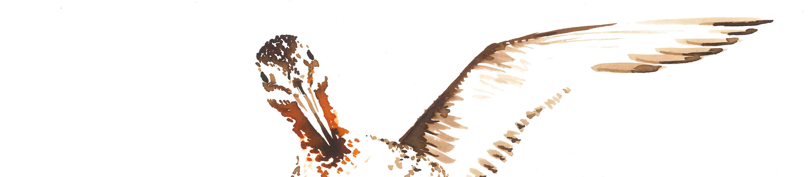

de route naar het zuiden
Mijn vader is helemaal gek op vogels. Zeker op bijzondere soorten. De grutto is er daar één van. Het is tenslotte de nationale vogel van Nederland. Voor mij is mijn vader dan ook de inspiratie om op te komen voor deze diersoort. Ik zie zijn ogen oplichten wanneer hij er één ziet.
Net als een vogel ben ik het nest uitgevlogen en woon ik in het uiterste zuiden van ons land. De route naar het zuiden slaat niet alleen op de reis van de grutto, maar ook op mijn eigen reis. Laat de grutto niet verdwijnen uit Nederland.
Neem dan ook mijn vader als voorbeeld in onderstaande video.